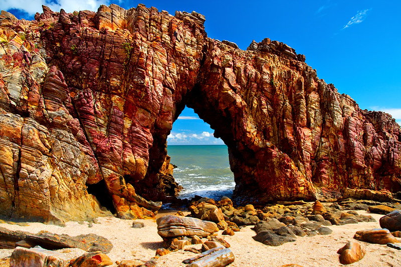
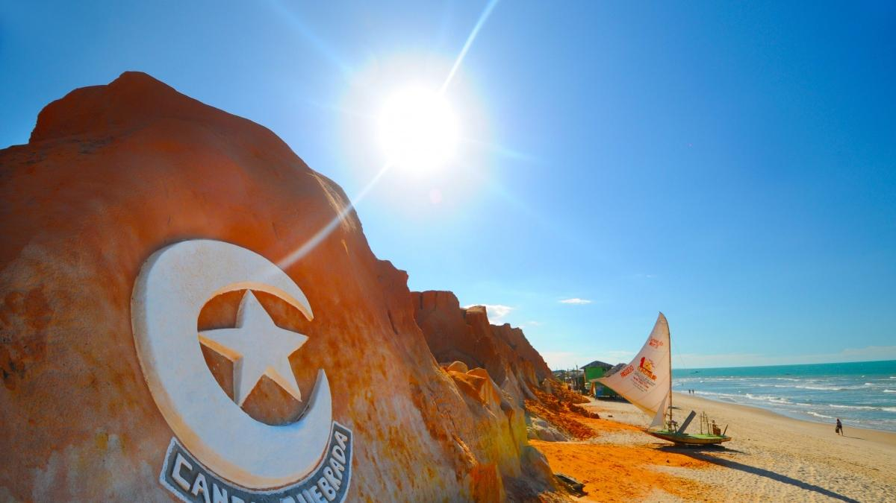
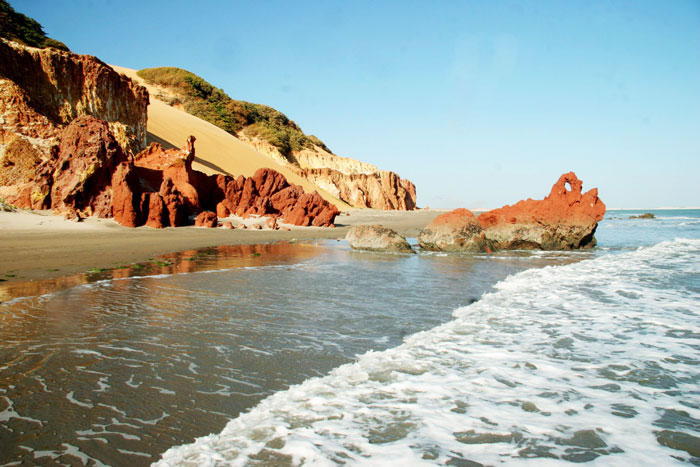
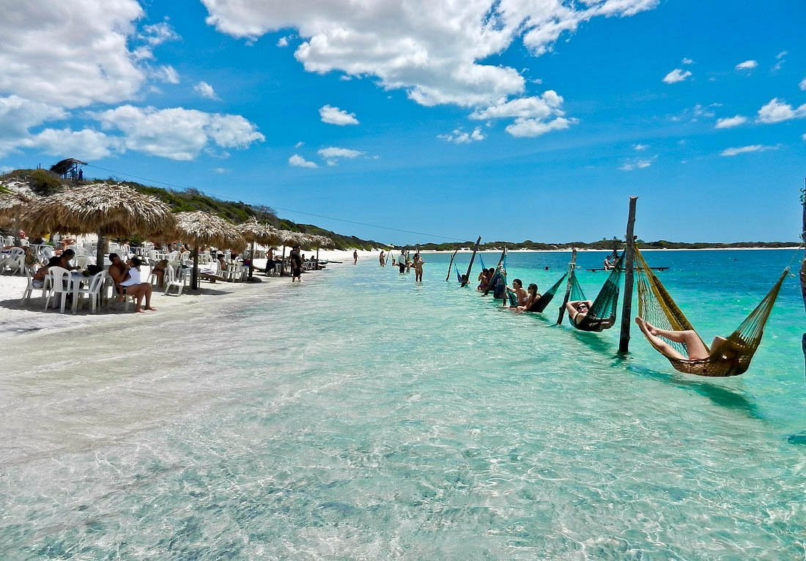
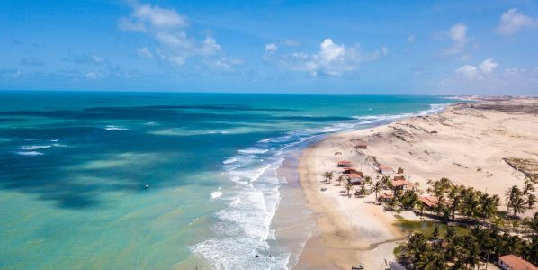
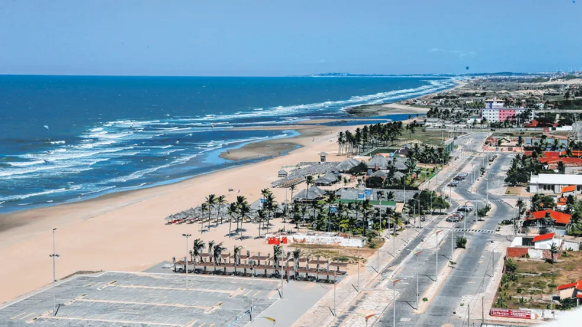
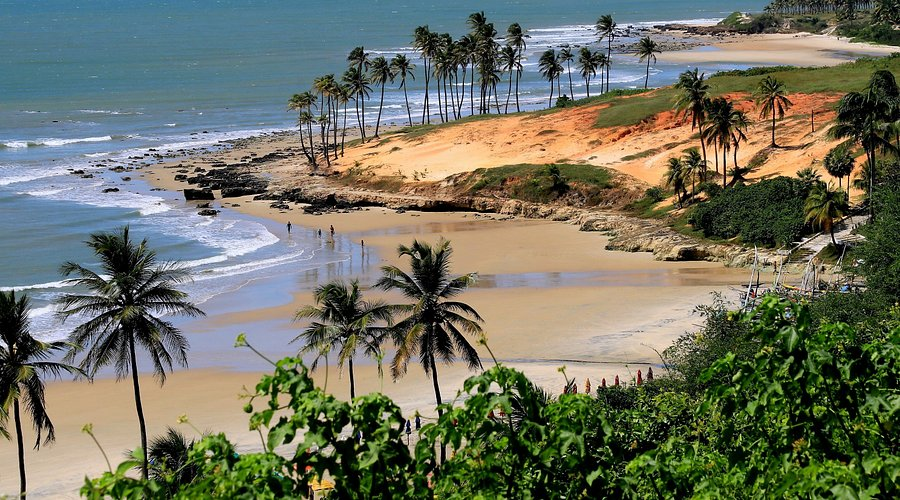
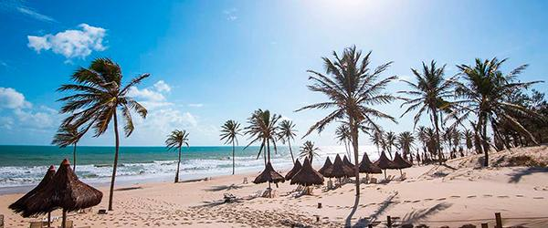

Paisagens Cearenses
As paisagens cearenses são um convite à admiração. O Ceará é um estado onde a natureza se apresenta em sua forma mais exuberante, mesclando mar, dunas, serras e caatinga de maneira única. As praias, como Jericoacoara e Canoa Quebrada, são famosos por suas águas cristalinas, falésias coloridas e ventos que atraem praticantes de esportes como o kitesurf. No interior, a caatinga, com sua vegetação adaptada ao clima árido, revela uma beleza rústica e surpreendente, com vastos campos e rios temporários que tornam a paisagem ainda mais encantadora. As serras, como a de Ibiapaba, oferecem um contraste refrescante com a aridez do sertão, trazendo um verde acolhedor e pequenas vilas cheias de cultura local. O Ceará é, sem dúvida, um destino onde a diversidade de paisagens encanta e faz qualquer um se sentir em sintonia com a natureza.
Pedra Furada
A Pedra Furada é um dos ícones naturais mais impressionantes de Jericoacoara e do Ceará. Localizada a cerca de 1,5 km do centrinho da vila, essa formação rochosa, com um grande buraco no centro, é um verdadeiro cartão-postal da região. A pedra, esculpida ao longo de milênios pela ação do vento e da maré, oferece uma visão deslumbrante, especialmente durante o pôr do sol, quando o sol se alinha perfeitamente com o arco natural, criando uma cena mágica e única. Além de sua beleza, a Pedra Furada é um símbolo da história geológica e cultural de Jericoacoara, sendo um dos pontos turísticos mais visitados no Parque Nacional de Jericoacoara.
Beach Park

O Beach Park, localizado em Fortaleza, é um dos maiores e mais famosos parques aquáticos do Brasil, atraindo turistas de todas as idades em busca de diversão e adrenalina. Com uma infraestrutura moderna e uma localização privilegiada à beira-mar, o parque combina o frescor das águas cristalinas do Ceará com uma variedade de atrações para todas as idades. Desde as emocionantes montanhas-russas aquáticas até as piscinas tranquilas e as áreas para crianças, o Beach Park oferece opções para toda a família.
Dentre as atrações mais conhecidas, destaca-se o Insano, uma das toboáguas mais altas e rápidas do mundo, que proporciona uma descida vertiginosa de 41 metros de altura, desafiando até os mais corajosos. Além disso, o parque conta com áreas temáticas, como o Acqua Circo, perfeito para os pequenos, e a Lagoa do Caranguejo, que proporciona momentos de relaxamento com uma vista deslumbrante da praia. O Prainha, com seu mar calmo e com estruturas de apoio, é ideal para quem quer descansar e curtir a paisagem em um ambiente tranquilo.
Além das atrações aquáticas, o Beach Park tem uma gama de opções de alimentação, lojas de souvenirs e espaços de lazer, tornando-o não apenas um parque, mas um destino completo para quem visita Fortaleza. A mistura de natureza exuberante, diversão e a hospitalidade cearense fazem do Beach Park um dos principais pontos turísticos da cidade, oferecendo uma experiência inesquecível para quem busca lazer e aventura à beira-mar.
Canoa Quebrada
Canoa Quebrada, localizada no município de Aracati, no litoral leste do Ceará, é um dos destinos mais encantadores e emblemáticos do estado. Conhecida por suas falésias coloridas, águas cristalinas e atmosfera rústica e charmosa, Canoa Quebrada é um lugar que combina beleza natural com uma vibe descontraída, atraindo turistas de todo o mundo.
As falésias de tons avermelhados e alaranjados são um dos principais cartões-postais da região e proporcionam uma paisagem de tirar o fôlego, especialmente ao pôr do sol, quando o céu se mistura com as cores da terra e do mar, criando um cenário mágico. A praia de Canoa Quebrada é tranquila, com águas claras e mornas, perfeitas para um banho relaxante. Além disso, o mar de ondas suaves e ventos constantes faz da região um excelente ponto para a prática de esportes aquáticos, como o kitesurf.
O vilarejo de Canoa Quebrada tem um charme particular, com suas ruas de areia, casinhas coloridas e o famoso "Arco-íris" — um grande arco formado pelas falésias que parece emoldurar o vilarejo. A Rua Dragão do Mar, a principal rua de Canoa Quebrada, é repleta de bares, restaurantes e lojas de artesanato local, onde é possível experimentar a deliciosa culinária cearense e adquirir lembranças únicas da região. À noite, a vila se transforma, oferecendo música ao vivo, forró e uma vibe animada que atrai turistas e locais em busca de diversão.
Além de sua beleza natural, Canoa Quebrada é um destino cultural, onde se preserva um estilo de vida simples e acolhedor, típico das comunidades litorâneas do Ceará. É um lugar ideal para quem busca descanso, contato com a natureza e uma experiência autêntica do litoral nordestino. Canoa Quebrada é, sem dúvida, uma joia do Ceará, que encanta com sua paisagem, história e cultura.
Praia de Ponta Grossa
A Praia de Ponta Grossa, localizada em Icapuí, é um dos cenários mais marcantes do litoral cearense, conhecida por suas falésias coloridas que formam um contraste impressionante com o azul intenso do mar. O ambiente é tranquilo e preservado, ideal para quem busca contato direto com a natureza e momentos de descanso. Suas águas calmas e mornas favorecem passeios de jangada e caminhadas pela faixa de areia extensa, onde é possível observar formações rochosas esculpidas pelo tempo. Além da beleza natural, a comunidade local é acolhedora e mantém tradições simples ligadas à pesca e ao artesanato. A combinação de paisagens únicas e atmosfera rústica faz de Ponta Grossa um destino encantador para quem deseja conhecer um Ceará mais autêntico e sereno.
Lagoa de Jijoca
A Lagoa de Jijoca, em Jericoacoara, é um dos cartões-postais mais famosos do Ceará, reconhecida por suas águas cristalinas em tons de azul e verde que criam um cenário paradisíaco. Rodeada por dunas claras e areia fina, a lagoa oferece um ambiente calmo, perfeito para relaxar em redes estendidas diretamente sobre a água — um dos símbolos do local. A tranquilidade do vento e o brilho do sol tornam o espaço ideal para banho, passeios de caiaque e momentos de contemplação. A infraestrutura ao redor, embora simples, é acolhedora e voltada ao turismo sustentável, com barracas que servem pratos regionais frescos. A combinação entre beleza natural, sossego e clima tropical faz da Lagoa de Jijoca um destino inesquecível para quem visita Jericoacoara.
Caetanos de Cima
Caetanos de Cima, localizado no município de Amontada, é um pequeno tesouro do litoral cearense, conhecido por sua atmosfera rústica, tranquila e profundamente ligada à natureza. A região abriga comunidades tradicionais que mantêm vivas práticas como a pesca artesanal e o cultivo sustentável, tornando a experiência do visitante autêntica e culturalmente rica. Suas praias quase desertas, o mar calmo e os coqueirais que se estendem até onde a vista alcança criam um cenário perfeito para quem busca descanso e simplicidade. Além disso, o pôr do sol em Caetanos de Cima é um espetáculo à parte, refletindo tons dourados sobre a areia clara. A combinação entre preservação ambiental, vida comunitária e paisagens serenas transforma o local em um refúgio ideal para quem deseja conhecer um Ceará mais natural e acolhedor.
Praia do Futuro
A Praia do Futuro, em Fortaleza, é uma das mais famosas e movimentadas do Ceará, marcada por sua extensa faixa de areia e pelo mar forte, ideal para quem gosta de ondas e clima praiano intenso. Suas barracas são verdadeiros complexos de lazer, oferecendo boa infraestrutura, culinária regional e espaços amplos para famílias e grupos de amigos. Durante o dia, o local é perfeito para banho, prática de esportes e momentos de descanso à beira-mar. À noite, algumas barracas ganham vida com música e eventos culturais que animam moradores e turistas. A mistura de energia, boa estrutura e beleza natural faz da Praia do Futuro um dos pontos mais vibrantes de Fortaleza.
Morro Branco

Morro Branco, em Beberibe, é um dos destinos mais impressionantes do litoral cearense, famoso por suas falésias multicoloridas que formam um verdadeiro labirinto natural às margens do mar. As cores das rochas, esculpidas pelo vento e pela chuva, criam um cenário único que encanta turistas e fotógrafos. A praia combina águas claras, areia fina e um clima tranquilo, perfeito para caminhadas e passeios guiados pelo interior das falésias. Além disso, o local é conhecido pelo artesanato feito com areias coloridas, tradição que preserva a identidade cultural da região. Com paisagens memoráveis e atmosfera serena, Morro Branco se destaca como um dos cartões-postais mais belos do Ceará.
Praia de Lagoinha
A Praia de Lagoinha, em Paraipaba, é um dos cenários mais emblemáticos do litoral cearense, conhecida por sua extensa faixa de areia dourada, coqueirais inclinados pelo vento e dunas que moldam a paisagem com suavidade. O mar calmo e de águas claras torna o ambiente ideal para banho, passeios de jangada e atividades como esquibunda e tirolesa nas áreas próximas às lagoas. A vista do mirante revela uma das imagens mais famosas do Ceará, onde o verde dos coqueiros encontra o azul do oceano em perfeita harmonia. Apesar da beleza paradisíaca, o clima é tranquilo, com estrutura acolhedora que valoriza a natureza local. Por sua combinação de simplicidade, charme e paisagens marcantes, Lagoinha é um destino que conquista quem busca descanso e contato direto com o litoral cearense.
Praia de Cumbuco
A Praia de Cumbuco, em Caucaia, é um dos destinos mais conhecidos do Ceará, marcada pela combinação vibrante entre dunas extensas, lagoas naturais e um mar propício para esportes como kitesurf e windsurf. O vento constante da região atrai atletas do mundo inteiro, enquanto os visitantes podem desfrutar de passeios de buggy pelas dunas, que incluem o famoso “esquibunda”. A praia possui boa infraestrutura, com barracas, restaurantes e opções de hospedagem que garantem conforto sem tirar o charme rústico do local. As lagoas próximas, como a de Parnamirim, complementam o cenário com águas tranquilas ideais para banho e descanso. Com sua energia única e variedade de atividades, Cumbuco se destaca como um dos lugares mais completos e animados do litoral cearense.